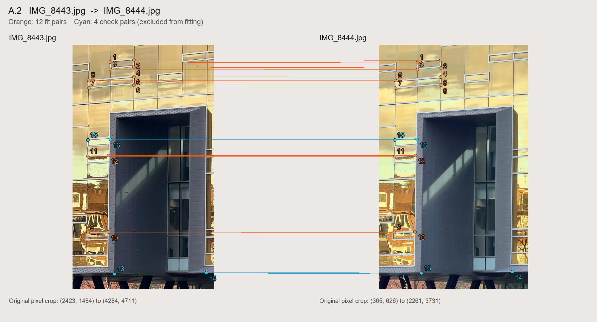
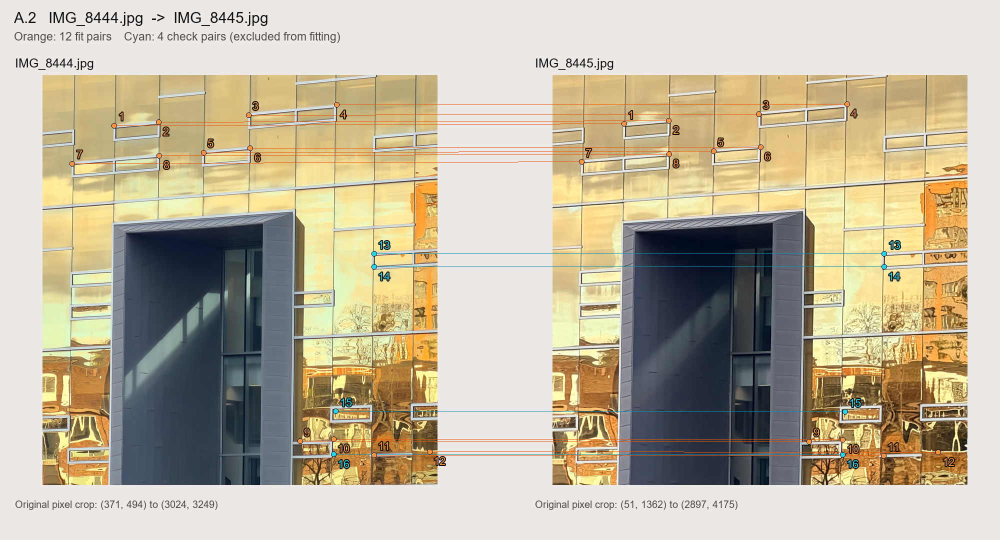
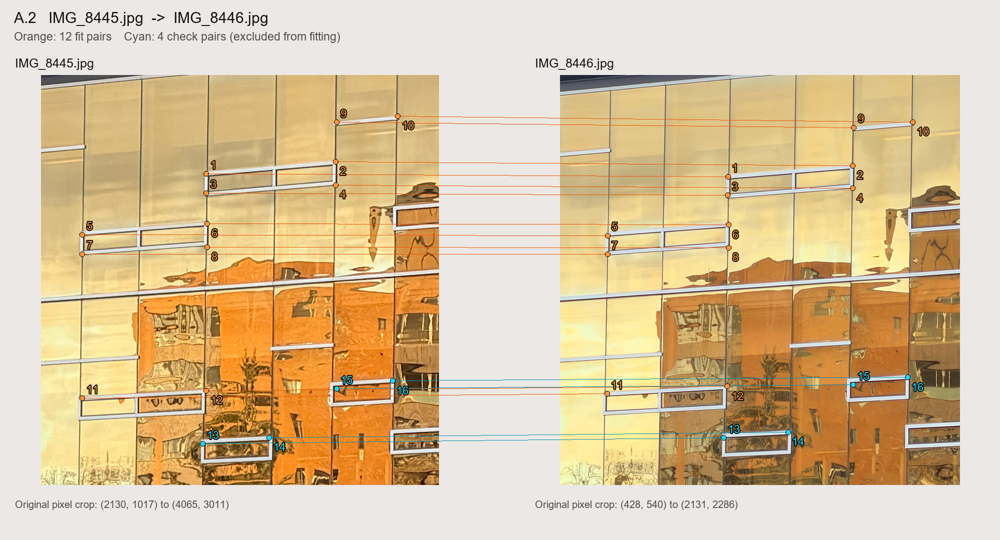
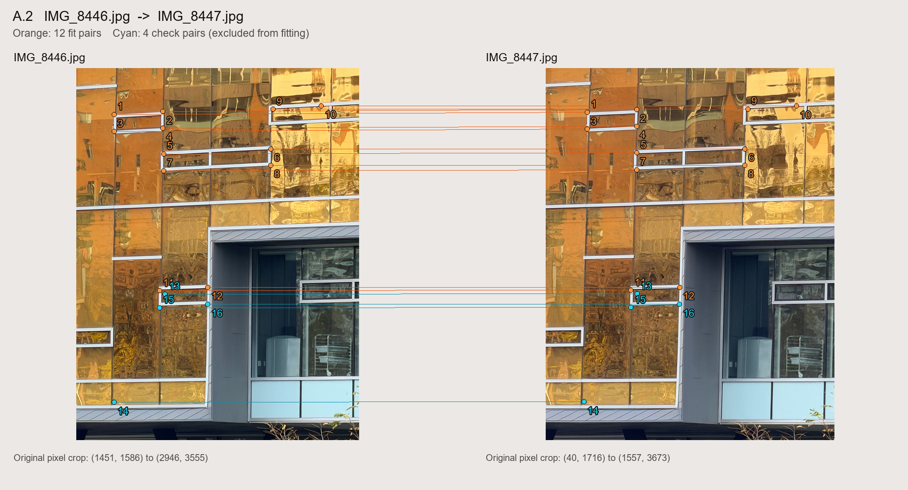
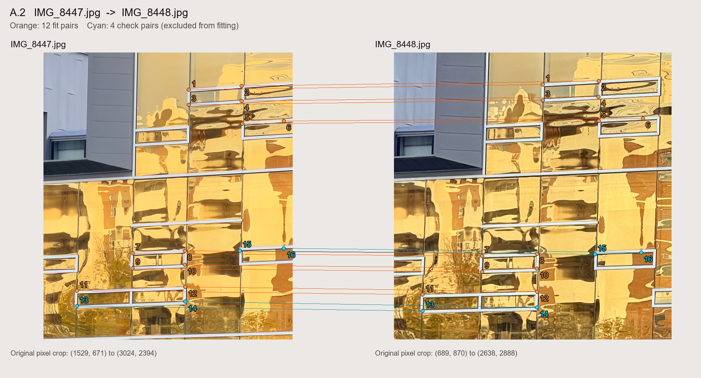
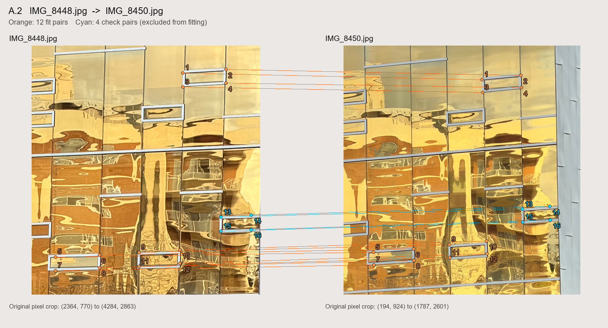
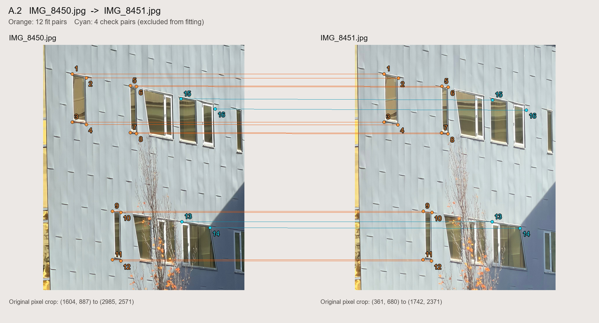
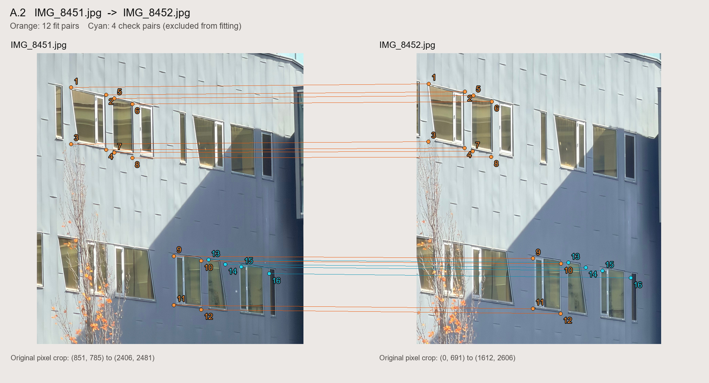

Mosaics
SYDE 671 · Assignment 3 · James Xie
A.2 / RECOVERING
HOMOGRAPHIES
Eight adjacent image pairs, an explicit overdetermined linear system, and a homography solver implemented from scratch.
Method and correspondence provenance
For each of eight pairs, the assistant visually selected 16 architectural points: 12 for fitting and four excluded check points. Frames were preferred over vegetation and reflections.
Points are visually seeded and locally refined on 1008 × 1344 previews, not user mouse clicks. A scaled 31 × 31 patch is matched within ±32 preview pixels, with a subpixel peak estimate. Patch scale is visually estimated per pair. Original coordinates use (p + 0.5) × original_size / preview_size − 0.5, with each image sized 3024 × 4032 or 4284 × 5712. Previews aid annotation only. OpenCV handles image loading and local correlation; H is solved by handwritten code without automatic feature matching or RANSAC.
Seeds, refined coordinates, scores and annotation corrections are saved. All fitting points have equal weight; none is removed by its H error.
From point pairs to a linear system
For a source point (x, y) and its target (u, v), the projective relation p′ ∼ Hp gives:
Twelve pairs give a 24 × 8 system. Each point set is centered and scaled to mean distance √2. NumPy least squares minimizes ||Aₙhₙ − bₙ||², then H returns to original coordinates:
Normalization improves conditioning. This minimizes algebraic error, not geometric reprojection error. Invalid, nonfinite, degenerate, rank-deficient or singular cases are rejected.
Forward geometric error is measured independently in original target pixels:
Measured errors
Each row describes the corresponding adjacent pair below. Smaller errors indicate closer agreement with the annotated points.
| Pair | Fit RMSE (px) | Check RMSE (px) | Max check (px) |
|---|---|---|---|
| Pair 1 | 0.339 | 1.236 | 2.305 |
| Pair 2 | 0.897 | 2.091 | 2.771 |
| Pair 3 | 0.288 | 0.687 | 1.133 |
| Pair 4 | 0.567 | 1.611 | 2.415 |
| Pair 5 | 0.869 | 0.838 | 1.376 |
| Pair 6 | 1.067 | 2.289 | 2.777 |
| Pair 7 | 1.091 | 1.971 | 2.310 |
| Pair 8 | 0.811 | 1.924 | 2.558 |
PAIR 01
IMG_8443.jpg → IMG_8444.jpg
H maps original source to target coordinates. Orange: fitting points 1–12. Cyan: check points 13–16.

Recovered homography
0.9692835495 -0.001368386108 -1968.155832 0.006730706694 0.964556008 -812.3807436 3.025485936e-06 -1.943918942e-07 1
Normalized system: 24 equations, 8 unknowns, rank 8. Condition number changes from 7.45e+08 before normalization to 12.6 after normalization.
First two rows of the raw system
2921.4 1714.4 1 0 0 0 -2.4943e+06 -1.4637e+06 0 0 0 2921.4 1714.4 1 -2.4933e+06 -1.4632e+06
Right-hand side: 853.8047, 853.4664. The normalized system is solved; the raw system is shown for reference.
Full raw and normalized systems (JSON) · Raw equations (CSV) · Audit all 16 local image patches

All point coordinates and errors
| Point | Role | Source (x, y) | Target (u, v) | Error (px) | Local NCC |
|---|---|---|---|---|---|
| 1 | fit | 2921.38, 1714.38 | 853.80, 853.47 | 0.181 | 0.929 |
| 2 | fit | 3231.62, 1684.62 | 1150.98, 826.23 | 0.252 | 0.917 |
| 3 | fit | 2921.38, 1807.88 | 853.80, 943.32 | 0.245 | 0.916 |
| 4 | fit | 3231.62, 1782.38 | 1150.96, 919.93 | 0.056 | 0.897 |
| 5 | fit | 2636.62, 1956.62 | 580.07, 1084.17 | 0.394 | 0.867 |
| 6 | fit | 3231.62, 1905.62 | 1150.82, 1037.34 | 0.355 | 0.883 |
| 7 | fit | 2636.62, 2054.38 | 580.28, 1178.34 | 0.342 | 0.758 |
| 8 | fit | 3231.62, 2011.88 | 1150.67, 1139.89 | 0.648 | 0.895 |
| 9 | fit | 2623.88, 3966.88 | 565.51, 3010.14 | 0.204 | 0.927 |
| 10 | fit | 2895.88, 3958.38 | 826.58, 3001.15 | 0.172 | 0.909 |
| 11 | fit | 2623.88, 2959.62 | 567.40, 2044.79 | 0.524 | 0.937 |
| 12 | fit | 2895.88, 2946.88 | 828.02, 2032.66 | 0.237 | 0.956 |
| 13 | check | 2976.62, 4510.88 | 904.27, 3530.12 | 0.766 | 0.964 |
| 14 | check | 4187.88, 4493.88 | 2060.40, 3511.30 | 2.305 | 0.989 |
| 15 | check | 2623.88, 2742.88 | 567.39, 1837.49 | 0.276 | 0.922 |
| 16 | check | 2921.38, 2734.38 | 852.59, 1829.91 | 0.372 | 0.956 |
PAIR 02
IMG_8444.jpg → IMG_8445.jpg
H maps original source to target coordinates. Orange: fitting points 1–12. Cyan: check points 13–16.

Recovered homography
1.029159497 -0.0003074851713 -335.305284 0.008944035904 1.034458755 830.000679 1.249446976e-06 1.629907205e-06 1
Normalized system: 24 equations, 8 unknowns, rank 8. Condition number changes from 1.11e+08 before normalization to 10.8 after normalization.
First two rows of the raw system
853 835 1 0 0 0 -4.6181e+05 -4.5206e+05 0 0 0 853 835 1 -1.4484e+06 -1.4178e+06
Right-hand side: 541.3919, 1697.9763. The normalized system is solved; the raw system is shown for reference.
Full raw and normalized systems (JSON) · Raw equations (CSV) · Audit all 16 local image patches

All point coordinates and errors
| Point | Role | Source (x, y) | Target (u, v) | Error (px) | Local NCC |
|---|---|---|---|---|---|
| 1 | fit | 853.00, 835.00 | 541.39, 1697.98 | 0.796 | 0.970 |
| 2 | fit | 1153.00, 811.00 | 848.51, 1675.45 | 0.844 | 0.905 |
| 3 | fit | 1756.00, 763.00 | 1466.53, 1629.87 | 0.482 | 0.896 |
| 4 | fit | 2347.00, 694.00 | 2071.93, 1562.21 | 0.552 | 0.948 |
| 5 | fit | 1453.00, 1015.00 | 1155.58, 1885.62 | 0.820 | 0.834 |
| 6 | fit | 1768.00, 985.00 | 1478.20, 1857.55 | 0.161 | 0.824 |
| 7 | fit | 571.00, 1090.00 | 251.20, 1957.30 | 0.527 | 0.889 |
| 8 | fit | 1156.00, 1036.00 | 851.30, 1905.68 | 0.405 | 0.977 |
| 9 | fit | 2101.00, 2956.00 | 1812.20, 3877.00 | 0.871 | 0.941 |
| 10 | fit | 2326.00, 2941.00 | 2042.05, 3864.28 | 0.888 | 0.812 |
| 11 | fit | 2599.00, 3049.00 | 2321.19, 3974.86 | 1.719 | 0.964 |
| 12 | fit | 2971.00, 3025.00 | 2696.63, 3951.55 | 1.456 | 0.869 |
| 13 | check | 2599.00, 1696.00 | 2326.07, 2589.56 | 2.771 | 0.980 |
| 14 | check | 2599.00, 1783.00 | 2325.98, 2678.87 | 2.682 | 0.975 |
| 15 | check | 2341.00, 2755.00 | 2058.47, 3673.02 | 0.874 | 0.951 |
| 16 | check | 2326.00, 3043.00 | 2041.33, 3966.11 | 1.361 | 0.803 |
PAIR 03
IMG_8445.jpg → IMG_8446.jpg
H maps original source to target coordinates. Orange: fitting points 1–12. Cyan: check points 13–16.

Recovered homography
0.8549333784 -0.003648800792 -1353.12955 0.005536787712 0.8489642543 -308.2415409 2.577855665e-06 -1.23146486e-06 1
Normalized system: 24 equations, 8 unknowns, rank 8. Condition number changes from 6.39e+08 before normalization to 9.45 after normalization.
First two rows of the raw system
2934.1 1497.6 1 0 0 0 -3.3546e+06 -1.7123e+06 0 0 0 2934.1 1497.6 1 -2.8561e+06 -1.4578e+06
Right-hand side: 1143.3175, 973.4076. The normalized system is solved; the raw system is shown for reference.
Full raw and normalized systems (JSON) · Raw equations (CSV) · Audit all 16 local image patches

All point coordinates and errors
| Point | Role | Source (x, y) | Target (u, v) | Error (px) | Local NCC |
|---|---|---|---|---|---|
| 1 | fit | 2934.12, 1497.62 | 1143.32, 973.41 | 0.458 | 0.883 |
| 2 | fit | 3563.12, 1438.12 | 1675.37, 925.45 | 0.113 | 0.951 |
| 3 | fit | 2934.12, 1591.12 | 1143.07, 1052.65 | 0.271 | 0.842 |
| 4 | fit | 3563.12, 1552.88 | 1675.13, 1022.59 | 0.237 | 0.908 |
| 5 | fit | 2330.62, 1795.12 | 630.49, 1224.40 | 0.392 | 0.911 |
| 6 | fit | 2938.38, 1739.88 | 1146.23, 1178.60 | 0.213 | 0.901 |
| 7 | fit | 2330.62, 1888.62 | 630.34, 1303.52 | 0.315 | 0.861 |
| 8 | fit | 2938.38, 1854.62 | 1146.14, 1275.37 | 0.421 | 0.892 |
| 9 | fit | 3567.38, 1246.88 | 1679.31, 764.35 | 0.141 | 0.823 |
| 10 | fit | 3864.88, 1217.12 | 1930.56, 740.46 | 0.376 | 0.872 |
| 11 | fit | 2330.62, 2589.88 | 628.20, 1898.03 | 0.017 | 0.928 |
| 12 | fit | 2934.12, 2551.62 | 1141.04, 1866.06 | 0.076 | 0.764 |
| 13 | check | 2917.12, 2810.88 | 1126.00, 2085.67 | 0.104 | 0.878 |
| 14 | check | 3240.12, 2781.12 | 1399.68, 2060.66 | 0.236 | 0.873 |
| 15 | check | 3567.38, 2543.12 | 1677.49, 1859.96 | 0.733 | 0.868 |
| 16 | check | 3839.38, 2504.88 | 1908.07, 1827.77 | 1.133 | 0.723 |
PAIR 04
IMG_8446.jpg → IMG_8447.jpg
H maps original source to target coordinates. Orange: fitting points 1–12. Cyan: check points 13–16.

Recovered homography
1.017171342 -0.01255840496 -1394.826997 0.02155224173 1.015293267 71.31214176 4.544621871e-06 1.071148047e-06 1
Normalized system: 24 equations, 8 unknowns, rank 8. Condition number changes from 7.49e+08 before normalization to 5.83 after normalization.
First two rows of the raw system
1651 1831 1 0 0 0 -4.2741e+05 -4.7401e+05 0 0 0 1651 1831 1 -3.2155e+06 -3.5661e+06
Right-hand side: 258.8820, 1947.6226. The normalized system is solved; the raw system is shown for reference.
Full raw and normalized systems (JSON) · Raw equations (CSV) · Audit all 16 local image patches

All point coordinates and errors
| Point | Role | Source (x, y) | Target (u, v) | Error (px) | Local NCC |
|---|---|---|---|---|---|
| 1 | fit | 1651.00, 1831.00 | 258.88, 1947.62 | 0.250 | 0.972 |
| 2 | fit | 1909.00, 1816.00 | 517.85, 1935.14 | 0.948 | 0.814 |
| 3 | fit | 1651.00, 1921.00 | 258.38, 2038.10 | 0.547 | 0.947 |
| 4 | fit | 1909.00, 1903.00 | 517.55, 2022.30 | 0.586 | 0.953 |
| 5 | fit | 1912.00, 2041.00 | 518.95, 2161.22 | 0.221 | 0.949 |
| 6 | fit | 2479.00, 2014.00 | 1086.48, 2140.95 | 0.410 | 0.923 |
| 7 | fit | 1912.00, 2131.00 | 518.10, 2251.60 | 0.568 | 0.939 |
| 8 | fit | 2479.00, 2101.00 | 1085.55, 2227.15 | 0.623 | 0.917 |
| 9 | fit | 2491.00, 1804.00 | 1101.58, 1931.90 | 0.911 | 0.900 |
| 10 | fit | 2746.00, 1786.00 | 1356.87, 1916.14 | 0.499 | 0.823 |
| 11 | fit | 1891.00, 2764.00 | 488.14, 2885.40 | 0.419 | 0.931 |
| 12 | fit | 2146.00, 2746.00 | 744.09, 2868.86 | 0.279 | 0.953 |
| 13 | check | 1921.00, 2782.00 | 519.97, 2904.01 | 1.960 | 0.893 |
| 14 | check | 1651.00, 3355.00 | 240.82, 3472.49 | 2.415 | 0.949 |
| 15 | check | 1891.00, 2854.00 | 487.71, 2975.62 | 0.809 | 0.921 |
| 16 | check | 2146.00, 2836.00 | 742.81, 2959.30 | 0.235 | 0.948 |
PAIR 05
IMG_8447.jpg → IMG_8448.jpg
H maps original source to target coordinates. Orange: fitting points 1–12. Cyan: check points 13–16.

Recovered homography
1.243595351 -0.009059931692 -1236.090069 0.01699159389 1.242612968 -53.7931094 1.153574934e-06 1.663265499e-06 1
Normalized system: 24 equations, 8 unknowns, rank 8. Condition number changes from 6.22e+08 before normalization to 6.82 after normalization.
First two rows of the raw system
2401 895 1 0 0 0 -4.1649e+06 -1.5525e+06 0 0 0 2401 895 1 -2.6273e+06 -9.7934e+05
Right-hand side: 1734.6555, 1094.2337. The normalized system is solved; the raw system is shown for reference.
Full raw and normalized systems (JSON) · Raw equations (CSV) · Audit all 16 local image patches

All point coordinates and errors
| Point | Role | Source (x, y) | Target (u, v) | Error (px) | Local NCC |
|---|---|---|---|---|---|
| 1 | fit | 2401.00, 895.00 | 1734.66, 1094.23 | 0.443 | 0.939 |
| 2 | fit | 2719.00, 871.00 | 2126.83, 1070.03 | 0.801 | 0.931 |
| 3 | fit | 2401.00, 985.00 | 1734.12, 1205.03 | 1.104 | 0.871 |
| 4 | fit | 2719.00, 961.00 | 2125.65, 1181.23 | 0.861 | 0.890 |
| 5 | fit | 2722.00, 1099.00 | 2127.07, 1351.94 | 1.485 | 0.947 |
| 6 | fit | 2971.00, 1081.00 | 2437.84, 1332.89 | 1.737 | 0.859 |
| 7 | fit | 2065.00, 1876.00 | 1307.54, 2300.01 | 0.303 | 0.841 |
| 8 | fit | 2377.00, 1861.00 | 1693.19, 2285.28 | 0.473 | 0.945 |
| 9 | fit | 2065.00, 1966.00 | 1307.16, 2410.95 | 0.521 | 0.957 |
| 10 | fit | 2377.00, 1945.00 | 1692.46, 2389.28 | 0.271 | 0.950 |
| 11 | fit | 1729.00, 2101.00 | 890.12, 2572.36 | 0.172 | 0.933 |
| 12 | fit | 2380.00, 2077.00 | 1693.88, 2551.37 | 0.593 | 0.910 |
| 13 | check | 1729.00, 2194.00 | 889.62, 2687.03 | 0.533 | 0.941 |
| 14 | check | 2380.00, 2167.00 | 1693.23, 2662.49 | 0.051 | 0.952 |
| 15 | check | 2707.00, 1861.00 | 2100.18, 2289.70 | 0.793 | 0.943 |
| 16 | check | 2971.00, 1846.00 | 2424.88, 2275.23 | 1.376 | 0.984 |
PAIR 06
IMG_8448.jpg → IMG_8450.jpg
H maps original source to target coordinates. Orange: fitting points 1–12. Cyan: check points 13–16.

Recovered homography
0.749660801 0.03293543998 -1606.642494 -0.01799065571 0.7457143048 499.6202323 6.173790055e-06 -1.6286892e-09 1
Normalized system: 24 equations, 8 unknowns, rank 8. Condition number changes from 1.15e+09 before normalization to 13.3 after normalization.
First two rows of the raw system
3635.4 1000.4 1 0 0 0 -4.0945e+06 -1.1267e+06 0 0 0 3635.4 1000.4 1 -4.1929e+06 -1.1538e+06
Right-hand side: 1126.2870, 1153.3563. The normalized system is solved; the raw system is shown for reference.
Full raw and normalized systems (JSON) · Raw equations (CSV) · Audit all 16 local image patches

All point coordinates and errors
| Point | Role | Source (x, y) | Target (u, v) | Error (px) | Local NCC |
|---|---|---|---|---|---|
| 1 | fit | 3635.38, 1000.38 | 1126.29, 1153.36 | 0.950 | 0.800 |
| 2 | fit | 3996.62, 970.62 | 1387.75, 1124.44 | 0.836 | 0.801 |
| 3 | fit | 3635.38, 1119.38 | 1129.39, 1240.95 | 0.783 | 0.738 |
| 4 | fit | 3996.62, 1085.38 | 1390.96, 1207.86 | 0.556 | 0.783 |
| 5 | fit | 2564.38, 2547.38 | 394.66, 2316.57 | 1.230 | 0.791 |
| 6 | fit | 2934.12, 2530.38 | 664.53, 2293.55 | 1.322 | 0.783 |
| 7 | fit | 2564.38, 2662.12 | 396.95, 2400.69 | 0.211 | 0.811 |
| 8 | fit | 2934.12, 2636.62 | 666.62, 2370.35 | 1.114 | 0.704 |
| 9 | fit | 3265.62, 2509.12 | 905.66, 2264.55 | 1.743 | 0.654 |
| 10 | fit | 3609.88, 2487.88 | 1156.64, 2239.25 | 1.185 | 0.490 |
| 11 | fit | 3265.62, 2628.12 | 909.02, 2352.75 | 0.844 | 0.804 |
| 12 | fit | 3609.88, 2602.62 | 1159.39, 2324.91 | 1.197 | 0.627 |
| 13 | check | 3954.12, 2211.62 | 1398.38, 2026.30 | 2.777 | 0.800 |
| 14 | check | 4209.12, 2194.62 | 1582.22, 2007.33 | 2.417 | 0.530 |
| 15 | check | 3954.12, 2330.62 | 1400.38, 2113.15 | 1.699 | 0.806 |
| 16 | check | 4209.12, 2317.88 | 1586.06, 2098.16 | 2.128 | 0.781 |
PAIR 07
IMG_8450.jpg → IMG_8451.jpg
H maps original source to target coordinates. Orange: fitting points 1–12. Cyan: check points 13–16.

Recovered homography
1.009978846 -0.006148543902 -1247.477215 0.01240330583 1.012256061 -234.3977107 3.826840772e-06 8.047152476e-07 1
Normalized system: 24 equations, 8 unknowns, rank 8. Condition number changes from 7.09e+08 before normalization to 14.3 after normalization.
First two rows of the raw system
1804 1087 1 0 0 0 -1.0148e+06 -6.1145e+05 0 0 0 1804 1087 1 -1.5887e+06 -9.5728e+05
Right-hand side: 562.5132, 880.6618. The normalized system is solved; the raw system is shown for reference.
Full raw and normalized systems (JSON) · Raw equations (CSV) · Audit all 16 local image patches

All point coordinates and errors
| Point | Role | Source (x, y) | Target (u, v) | Error (px) | Local NCC |
|---|---|---|---|---|---|
| 1 | fit | 1804.00, 1087.00 | 562.51, 880.66 | 1.227 | 0.915 |
| 2 | fit | 1900.00, 1114.00 | 660.12, 910.12 | 1.131 | 0.932 |
| 3 | fit | 1804.00, 1417.00 | 561.52, 1212.97 | 0.441 | 0.976 |
| 4 | fit | 1900.00, 1435.00 | 657.79, 1231.31 | 0.674 | 0.961 |
| 5 | fit | 2203.00, 1168.00 | 960.49, 966.29 | 0.837 | 0.861 |
| 6 | fit | 2245.00, 1174.00 | 1003.88, 972.17 | 0.838 | 0.844 |
| 7 | fit | 2203.00, 1489.00 | 957.29, 1287.98 | 1.838 | 0.927 |
| 8 | fit | 2245.00, 1495.00 | 1001.89, 1294.28 | 0.973 | 0.917 |
| 9 | fit | 2080.00, 2029.00 | 831.89, 1827.35 | 1.002 | 0.952 |
| 10 | fit | 2137.00, 2038.00 | 891.05, 1836.87 | 1.478 | 0.923 |
| 11 | fit | 2080.00, 2362.00 | 829.42, 2161.03 | 1.150 | 0.969 |
| 12 | fit | 2137.00, 2371.00 | 888.06, 2170.52 | 0.782 | 0.920 |
| 13 | check | 2557.00, 2101.00 | 1305.43, 1900.76 | 2.244 | 0.875 |
| 14 | check | 2749.00, 2143.00 | 1498.64, 1944.41 | 1.403 | 0.968 |
| 15 | check | 2551.00, 1258.00 | 1308.93, 1059.54 | 1.791 | 0.966 |
| 16 | check | 2785.00, 1327.00 | 1541.38, 1130.59 | 2.310 | 0.894 |
PAIR 08
IMG_8451.jpg → IMG_8452.jpg
H maps original source to target coordinates. Orange: fitting points 1–12. Cyan: check points 13–16.

Recovered homography
1.164861719 -0.01078236687 -1132.074458 0.02276797841 1.15796987 -272.0517452 2.696224638e-06 -1.360361335e-06 1
Normalized system: 24 equations, 8 unknowns, rank 8. Condition number changes from 1.48e+08 before normalization to 10.6 after normalization.
First two rows of the raw system
1051 985 1 0 0 0 -84795 -79470 0 0 0 1051 985 1 -9.3736e+05 -8.785e+05
Right-hand side: 80.6800, 891.8776. The normalized system is solved; the raw system is shown for reference.
Full raw and normalized systems (JSON) · Raw equations (CSV) · Audit all 16 local image patches

All point coordinates and errors
| Point | Role | Source (x, y) | Target (u, v) | Error (px) | Local NCC |
|---|---|---|---|---|---|
| 1 | fit | 1051.00, 985.00 | 80.68, 891.88 | 1.064 | 0.910 |
| 2 | fit | 1255.00, 1027.00 | 317.76, 943.69 | 0.411 | 0.923 |
| 3 | fit | 1051.00, 1315.00 | 78.43, 1273.29 | 0.492 | 0.802 |
| 4 | fit | 1255.00, 1348.00 | 315.40, 1314.79 | 0.871 | 0.946 |
| 5 | fit | 1303.00, 1048.00 | 373.96, 969.65 | 0.588 | 0.969 |
| 6 | fit | 1408.00, 1081.00 | 496.07, 1009.36 | 0.833 | 0.967 |
| 7 | fit | 1303.00, 1366.00 | 369.20, 1336.78 | 1.268 | 0.954 |
| 8 | fit | 1408.00, 1396.00 | 492.31, 1373.15 | 0.817 | 0.922 |
| 9 | fit | 1651.00, 1969.00 | 768.62, 2042.96 | 1.000 | 0.918 |
| 10 | fit | 1810.00, 1996.00 | 952.39, 2076.27 | 0.459 | 0.852 |
| 11 | fit | 1651.00, 2254.00 | 766.36, 2372.51 | 0.639 | 0.876 |
| 12 | fit | 1810.00, 2281.00 | 949.57, 2405.56 | 0.807 | 0.830 |
| 13 | check | 1852.00, 1990.00 | 1000.97, 2071.16 | 1.517 | 0.860 |
| 14 | check | 1951.00, 2017.00 | 1114.39, 2101.93 | 1.803 | 0.822 |
| 15 | check | 2044.00, 2032.00 | 1224.64, 2124.00 | 2.558 | 0.917 |
| 16 | check | 2206.00, 2071.00 | 1411.51, 2171.05 | 1.649 | 0.941 |
Limitations and next stage
Facade points support local alignment. Other depths, reflections, lens distortion and backlighting can still disagree. A fixed camera center is unverified.
IMG_8448 connects IMG_8447 → IMG_8448 → IMG_8450, completing the nine-photo chain. Low local point errors do not guarantee alignment at every depth. A.3 and A.4 show warping and mosaicing.
A.2 recovers H. See A.3 for resampling and A.4 for blending.
Reproduce and inspect
Run from A2 using the existing Python, NumPy, Pillow and OpenCV environment.
python prepare_correspondences.py python build_report.py python -m unittest test_homography test_refinement test_mixed_resolution test_report -v
Handwritten homography solver · Visual seeds and annotation revisions · Final point data · All matrices and error measurements · Nine original-view source previews

Checks cover known H values, four-point and noisy fits, large offsets, invalid inputs and local refinement. Real-photo checks verify matrices, equations, figures and point errors.